AppTown tour
Meet a small team's AppTown. Sam looks after it. Tom keeps a cycling club's newsletter and a little rocket game, and Priya runs the team's lunch orders and approves changes to the newsletter. Follow one change from Tom's request to Priya's decision, then look around. The conversations are recorded examples; the checks run against real example code. Back to apptown.dev.
Unreleased preview · source local working tree · All versions
Projects
The team's apps, each one live and working.
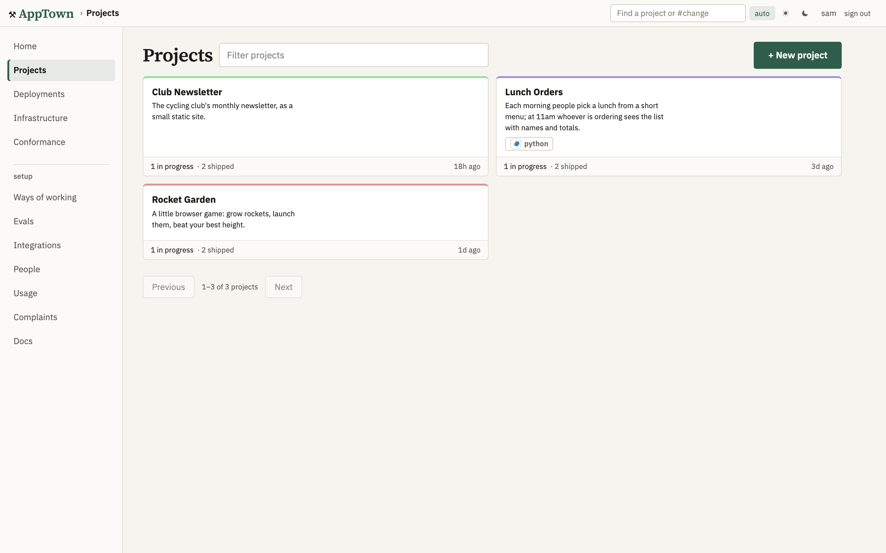
An app's page
Club Newsletter's page shows what has gone live and where it runs. Open app shows the site as members see it.
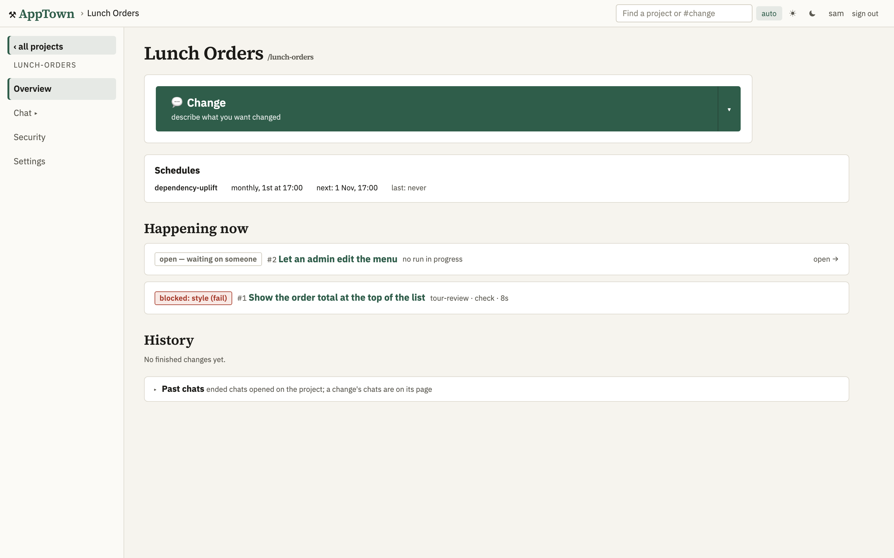
The site today
The club's newsletter and ride calendar. Useful, but Tom has an idea.

Ask for a change
Tom asked for a neon makeover in a chat. A coding agent changed its own copy of the site, ran the link checks, and said when it was ready to try.
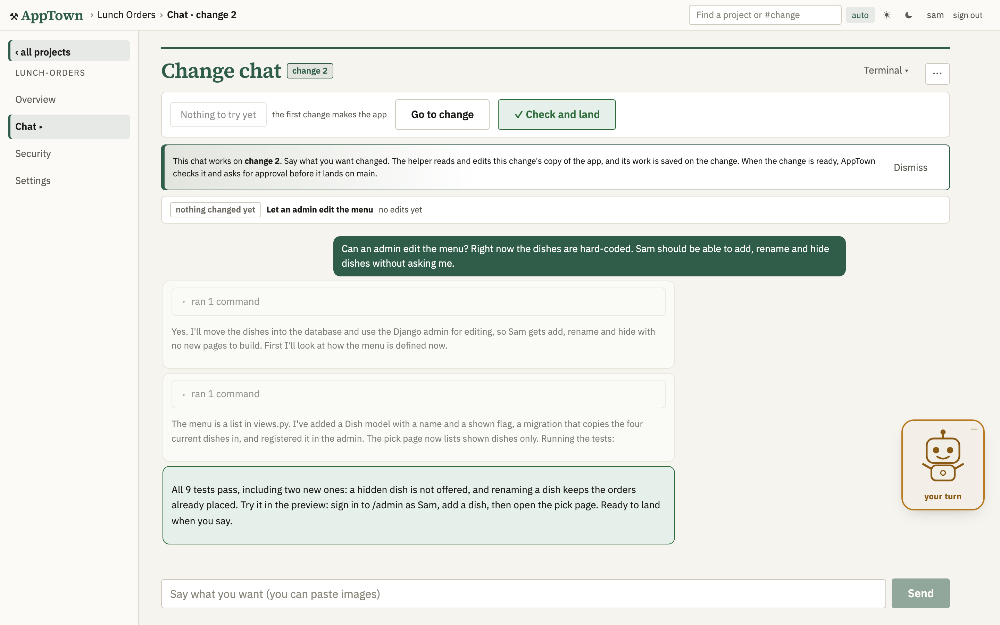
Try the preview
The change's preview runs the new site before anyone approves it. Once accepted and released, this is what club members see.

The change, checked
What Tom asked for, what the agent says it did, the checks that passed, and the preview. It waits for Priya, who approves the newsletter's changes.
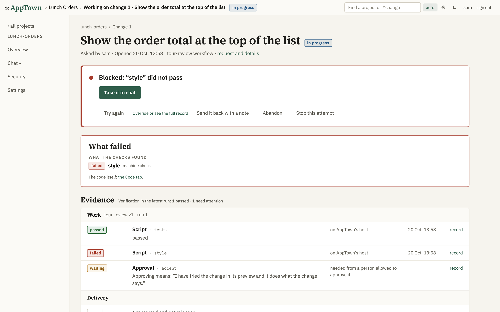
Decide
Decide shows what was asked, the checks, and what accepting means. AppTown records who accepted and what they agreed to.

Home
Your apps, recent work and what needs your attention. Here, the makeover waits for approval.
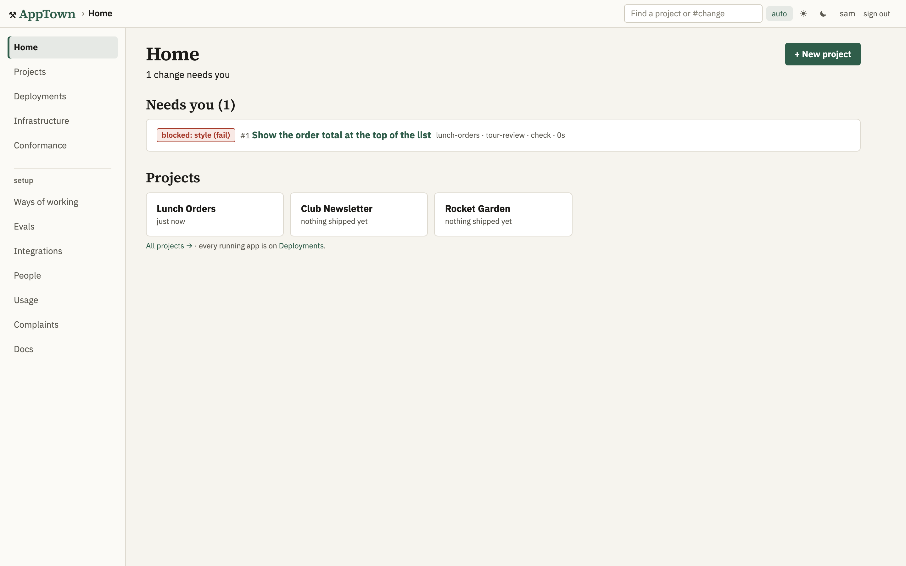
A deployment target
A machine apps run on, how much room it has, and what runs there.
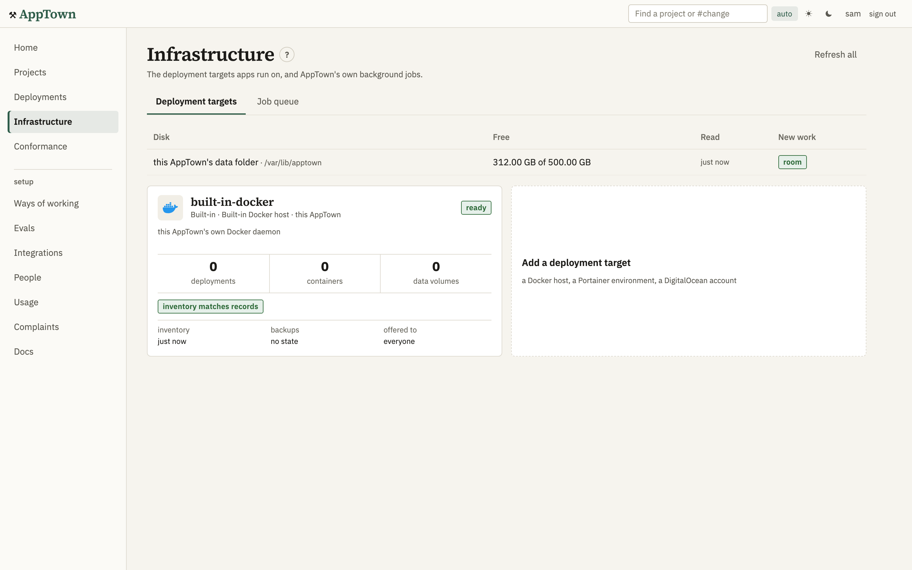
Conformance
Whether each app follows your team's ways of working, and what to fix. Checks that need services the example does not run are shown as incomplete.
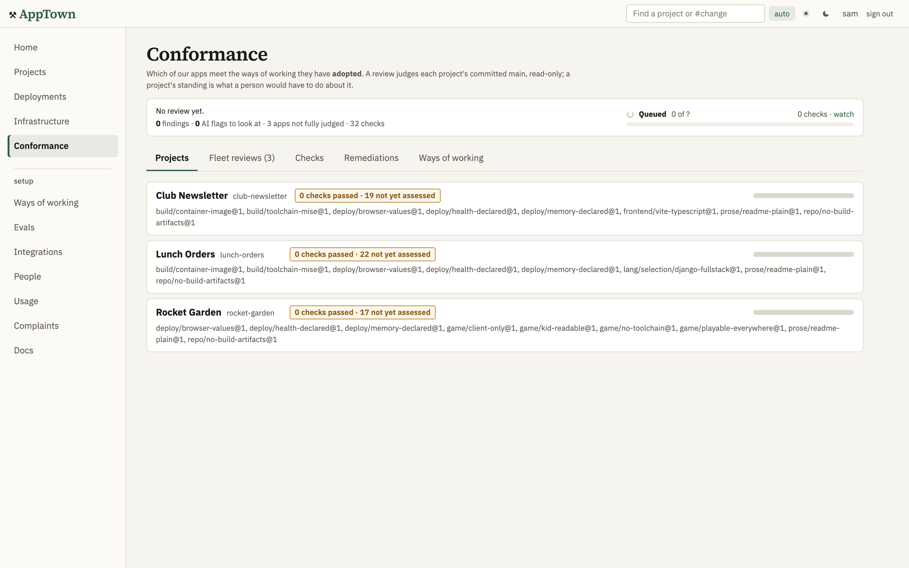
Ways of working
Guidance, checks and workflows, shared across your apps as packs.
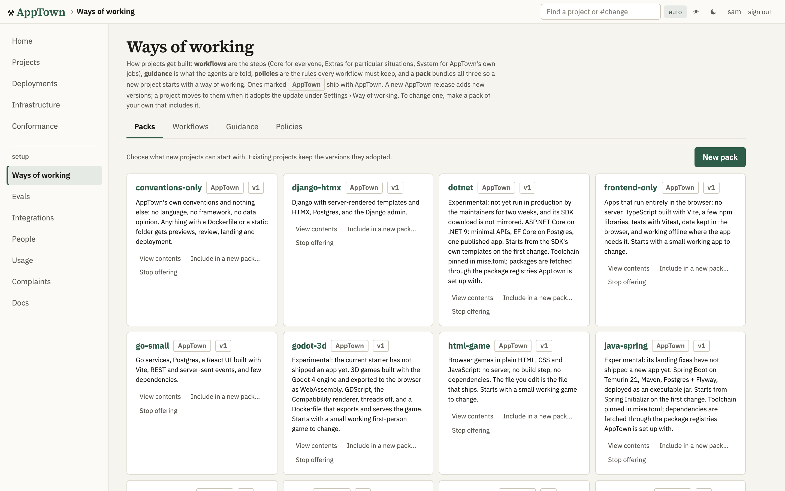
Usage
Token use and how long each step takes, including time waiting for approval.
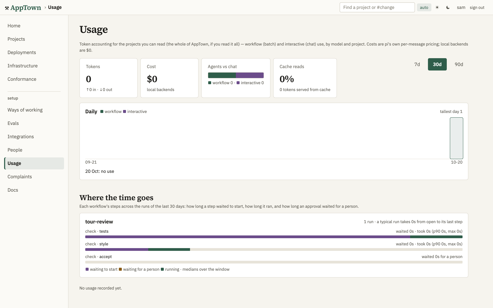
People
Who can use AppTown and what they can do.
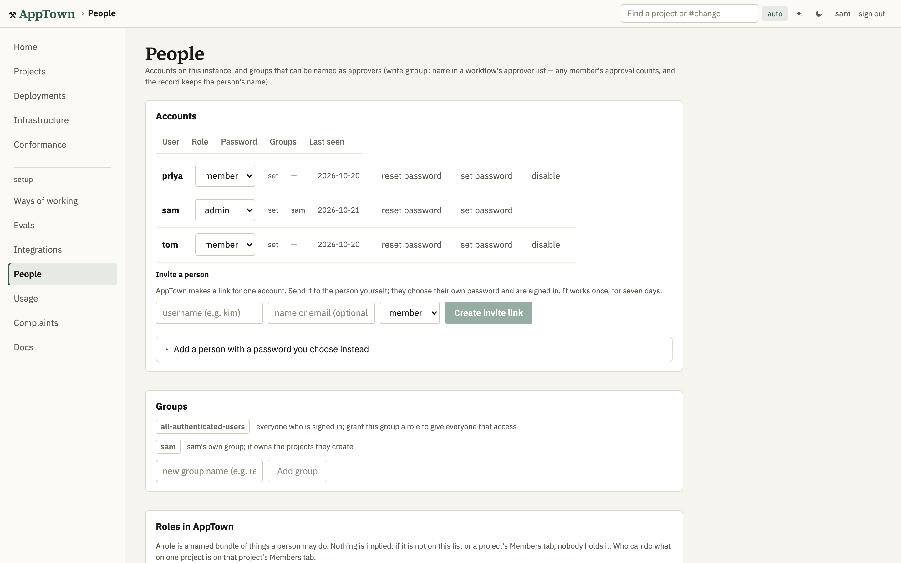
Docs
The guides ship with AppTown and open inside it.
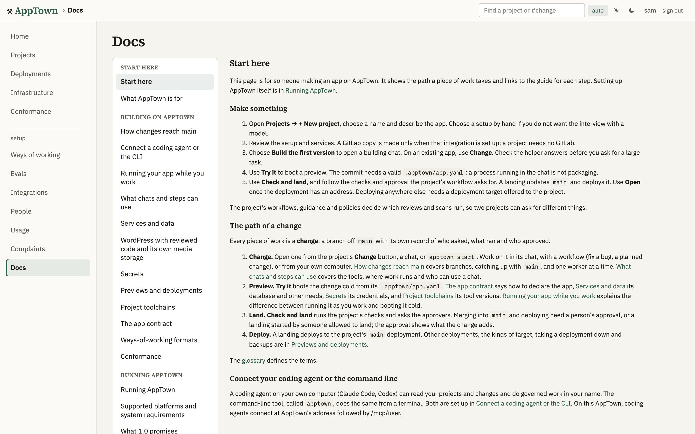